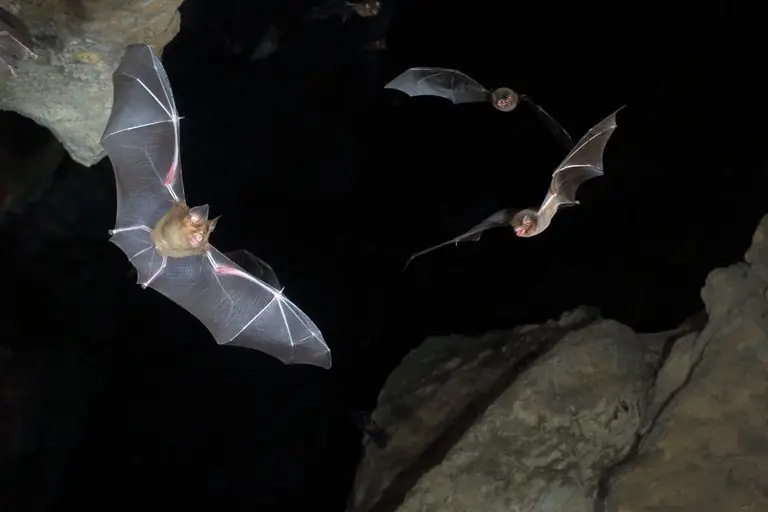

ექოლოკაცია
ექოლოკაცია არის ფიზიოლოგიური პროცესი, რომელსაც ზოგიერთი ცხოველი იყენებს დაბალი ხილვადობის ადგილებში ობიექტების დასადგენად. ცხოველები ასხივებენ მაღალი სიმაღლის ხმის ტალღებს, რომლებიც აგდებენ ობიექტებს, უბრუნებენ „ექოს“და აწვდიან ინფორმაციას ობიექტის ზომისა და მანძილის შესახებ. ამ გზით, მათ შეუძლიათ შეადგინონ რუკა და ნავიგაცია ირგვლივ მაშინაც კი, როცა ვერ ხედავენ.
უნარი ძირითადად დაცულია ცხოველებისათვის, რომლებიც არიან ღამისთევა, ღრმა ბურღულში ან ცხოვრობენ დიდ ოკეანეებში. იმის გამო, რომ ისინი ცხოვრობენ ან ნადირობენ მინიმალური სინათლის ან სრული სიბნელის ადგილებში, ისინი განვითარდნენ ისე, რომ ნაკლებად ეყრდნობიან მხედველობას და იყენებენ ხმას გარემოს გონებრივი გამოსახულების შესაქმნელად. ცხოველთა ტვინი, რომელიც განვითარდა ამ ექოს გასაგებად, ირჩევს ხმის სპეციფიკურ მახასიათებლებს, როგორიცაა სიმაღლე, ხმა და მიმართულება, რათა ნავიგაცია მოახდინოს გარშემო ან ნადირის საპოვნელად.
ექოლოკაციის გამოსაყენებლად ცხოველმა ჯერ უნდა შექმნას რაიმე სახის ხმის პულსი. როგორც წესი, ხმები შედგება მაღალი დონის ან ულტრაბგერითი წიკვისაგან ან დაწკაპუნებისგან. შემდეგ ისინი უსმენენეხმიანება გამოსხივებული ბგერითი ტალღებიდან, რომლებიც ახდენენ ობიექტებს მათ გარემოში. ღამურები და სხვა ცხოველები, რომლებიც იყენებენ ექოლოკაციას, სპეციალურად არიან მორგებული ამ ექოს თვისებებზე. თუ ხმა სწრაფად ბრუნდება, ცხოველმა იცის, რომ ობიექტი უფრო ახლოს არის; თუ ხმა უფრო ინტენსიურია, მან იცის, რომ ობიექტი უფრო დიდია. ექოს სიმაღლეც კი ეხმარება ცხოველს გარემოს დახატვაში. ობიექტი, რომელიც მათკენ მოძრაობს, ქმნის უფრო მაღალ სიმაღლეს, ხოლო საგნები, რომლებიც მოძრაობენ საპირისპირო მიმართულებით, იწვევს დაბალი ტემბრის დაბრუნების ექოს.